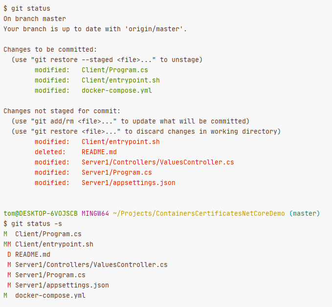

Wyciśnij soki z Gita
Przestań używać jak Zipa

Tomasz Skraskowski

- Backend developer at Pirios S.A.
- Writes code since 12
- Currently .Net (Core), previously C++
- Interested in decentralized systems
- www.SoftwareDeveloper.Blog
GitWarsztaty w Twojej firmie

Można odebrać telefon tak...

SVN Update...
SVN Commit...

Można obrabiać materiał prostymi narzędziami...

Można obrabiać materiał skomplikowanymi narzędziami...

Git wykracza poza
wersjonowanie i kolaborację
Git to narzędzie do edycji i zarządzania kodem
Programuj szybciej i twórz mniej błędów

Zaawansowane narzędzia mają próg wejścia

Nie rozmawiałem jeszcze z nikim, kto...
...nie widzi w R# niczego szczególnego i zna go dobrze
...nie widzi w Vimie* niczego szczególnego i zna go dobrze *Vimie w IDE(VS, Rider, VSCode)
...nie widzi w Gicie niczego szczególnego i zna go dobrze
Wyciskanie Gita
Podstawowy próg wejścia - konsola

(Głównie trudność dla użytkowników Windowsa)
Wyciskanie Gita
Drugi próg wejścia - fruwające commity

Zrozumienie i przyzwyczajenie się do rozproszonej architektury Gita,
w tym do commitów latających
między branchami i repozytoriami
Wyciskanie Gita
Trzeci próg wejścia - mnogość komend i przełączników

Wyciskanie Gita
Czwarty próg wejścia - wybór i odnalezienie się w workflow

Trunk Based Development

Git Flow

Git Guitar Hero

Feature toggle (aka Feature Flag)

Obawy przed konsolą
- Pewnie trzeba się strasznie opisać, a to będzie wolno szło
- Pewnie będzie problem spamiętać komendy
- To jest jakiś niewygodny przeżytek
Kiedy nie warto kurczowo trzymać się konsoli?
- Tool bywa lepszy do diffa
- Toole ładniej wizualizują historię branchów
- W dobrym IDE wygodniej się patrzy na Git Blame
- Nie warto rozwiązywać konfliktów bez toola
Myszka jest do eksplorowania

Są toole z dobrze ogarniętymi
skrótami klawiszowymi

Ale dobrze ogarnięta konsola wygrywa
- Z dobrze ogarniętą konsolą pracuje się wydajniej
- Konsola zawsze ma więcej możliwości - żaden tool nie pokryje wszystkich casów
- Konsola jest uniwersalna
- Nie ma toola działającego szybciej niż konsola
- Konsola zachęca do lepszego zrozumienia Gita
- Toole często zachęcają do złych praktyk i budują złe nawyki
- Toole często zachęcają do klikania zamiast używania skrótów klawiszowych
- Wiele (popularnych) tooli działa wolno i odrywa od flow
Co to znaczy dobrze ogarnięta konsola?
- Konsola zawsze pod ręką
- Zdecydowanie najlepiej gdy jest zintegrowana w IDE
- Opcjonalnie wyskakująca od skrótu klawiszowego
(choć to mało przy otwartych na raz dwóch lub więcej projektach)
- Konsola z wydajnym autouzupełnianiem
- Zdecydowanie dobrze, gdy konsola ma wydajny
reverse search - Ustawione Git aliasy i aliasy na poziomie shella
- Edytor konsolowy lub przynajmniej szybko otwierający się
Jak w kilka minut przygotować konsolę na start?
- Aby spełnić wszystkie prerekwizyty
- IDE z wbudowanym terminalem
(np. Jet Brains Rider, działa reverse search) - Bash ustawiony jako terminal w IDE
(na Windowsie GitBash) - Aliasy (Gitowe i Bashowe) na start wzięte z internetu
(np. z tej prezentacji, później dostosowywanie pod siebie)
- IDE z wbudowanym terminalem
- Opcjonalnie
- Dla IDE bez terminala
- (Git)Bash przypięty do taskbarda pod stałą pozycją wywoływany Win+pozycja
- Lub nakładka na (Git)Bash umożliwiająca wywołanie skrótem klawiszowym np. Conemu
- W terminalu ustawiony katalog z projektami jako katalog startowy
- Text expandery na poziomie OS np. AutoHotKey
- Odradzam poleganie na Alt+Tab
- Dla IDE bez terminala
Don't get fooled by simple interface
- Visual Studio Extension: Switch Startup Project
- Azure DevOps build definition

Przekonałem już niejedenego
zatwardziałego Windowsiarza :)

Co daje Git?
Jak przyczynia się do większej wydajności pracy?

Gdy wszystko musi iść po sieci...

Kontrola nad sytuacją w IDE

Nowe funkcjonalności po kawałku
Jaką małą zmianę prowadzącą do celu w tym momencie wprowadzam?
Commit!
(Mały i czysty - SRP)

Zawsze później można się z niego wycofać.
W ork I n P rogress

wip = !git add --all && git commit -m "WIP"
Monitorowanie zmian
Jesteśmy spokojni, że nie przemycimy przypadkiem zmiany, która powstała niechcący lub tylko na chwilę.

Monitorowanie tooli
Tool did something over many files...is it exactly what it was meant to be?

Stabilna praca z niestabilnym kodem
bda54862 Remove phone book button from main canvas
bb4efb64 Add phone book to shell resources
9cff0517 Add phone book image for slide panel
18b3ab24 Set phone book tab view model
251c65eb Remove not used catalog from phone book project
fa27d977 Use phone book view model from old module
836f9507 Clean phone book tab in side panel
98384dbb Move resources from old module to new phone book
b179f970 Move phone book view from old modules to side panel
882d2cb1 Remove referencs to old phone book module
3633f485 Merge old phone book module style with new in side panel
061441fb Set close phone book button to hide panel
9b54878f Remove unused button from phone book
153dbcd6 Remove no longer needed files from old phone book module
2895928d Remove old phone book module
6182277b Replace phone book buttons style to improve readibility
49ff42b6 Remove shadows from phone book
7d6584da Update entity migrations instruction
Alternatywne wersje rzeczywistości

Szybkie sprawdzanie starych wersji
- Szybkie i precyzyjne przeglądanie historii
- Szybkie przepinanie się na starą wersję
- Szybkie podglądanie starych wersji
- Szybki Blame do każdej linii w pliku
- Szybkie odszukiwanie commitów

Modyfikowanie kodu wprost z Gita
git reset Y; git checkout Y)git reset --hard)git stash --include-untracked)git add add Y -p), resztę z pliku
wywal (git checkout Y)
git add .),
ale wyklucz zmianę X z pliku Y (git reset Y -p) i wywal (git
checkout .)
Git posiada liczne narzędzia
i tricki usprawniające

Aliasy
Modyfikacje aliasów można wykonywać w gitconfigu
[alias]st = statusci = commit -v
Albo za pomocą polecenia
git config --global alias.st statusgit config --global alias.ci 'commit -v'
Przykład użycia: git st
Aliasy mogą być też na poziomie Basha - wówczas nie trzeba pisać Git.
Przykłady aliasów
vd = difftool --tool=vimdiffvds = difftool --tool=vimdiff --stagedwip = !git add --all && git commit -m WIPpfl = push --force-with-leasestandup = log --since '1 day ago' --oneline --author krzysztof.morcinek@gmail.com # use your mailcam = commit -amjira = log --since '6am' --oneline --author krzysztof.morcinek@gmail.com # use your maills = log --pretty=format:"%C(yellow)%h%Cred%d\\ %Creset%s%Cgreen\\ [%cn]" --decoratemt = mergetoolmff = merge --ff-onlycpc = cherry-pick --continuerei = rebase --interactiverec = rebase --continue- # list aliases
a = "!f() { git alias; }; f" alias = ! git config --get-regexp ^alias\\. | sed -e s/^alias\\.// -e s/\\ /\\ =\\ /
Pull --rebase
git pull --rebase
git config --global --bool pull.rebase true

Checkout last used branch
git checkout -

Short git status
git status -s

Intent to add untracked files
Np.
git add . -N
Przykładowe korzyści:
- działa git add -p
- można użyć git diff
Record only the fact that the path will be added later. An entry for the path is placed in the index with no content. This is useful for, among other things, showing the unstaged content of such files with git diff and committing them with git commit -a.
7 zasad dobrego commit message
- Oddziel tytuł od ciała pustą linią
- Ogranicz tytuł do 50 znaków
- Stosuj wielkie litery w tytule
- Nie kończ tytułu commita kropką
- Zapisuj tytuł w trybie rozkazującym
- Ogranicz 'szerokość' ciała do 72 znaków
- Opisz co i dlaczego, a nie jak
Oprócz punktu 6. (szerokość ciała), wszystkie punkty robią znaczącą różnicę.
Testowałem
każdy z nich w innych
wariacjach, te naprawdę mają sens.
git commit > git commit -m

git commit -v

git commit --amend --no-edit

Feature branch
- Should has short life
- Despite short life, update it (rebase) from master often

Git stash with name
git stash save "my stash"

Git add interactive
git add -i

Otwieranie gitconfiga z konsoli
git config --global -e

Ciekawe przełączniki do git merge
--ff--no-ff--ff-only--squash
Strategie mergowania
- resolve
- recursive
- ours
- theirs
- patience
- diff-algorithm=[patience|minimal|histogram|myers]
- ignore-space-change
- ignore-all-space
- ignore-space-at-eol
- ignore-cr-at-eol
- renormalize
- no-renormalize
- no-renames
- find-renames[=n]
- rename-threshold=n
- subtree[=path]
- octopus
- ours
- subtree
Git patch
Pozwala np. na łatwe przerzucanie zmian pomiędzy repozytoriami nie związanymi ze sobą.
Przykład:
git format-patch HEAD~2
# Output:
# 0001-make-stuff-more-awesome.patch
# 0002-allow-users-to-be-locked.patch
cp *.patch ANOTHER_REPO_PATH
cd ANOTHER_REPO_PATH
git am *.patch
Stagowanie/resetowanie po kawałku
git add -p
git reset -p

Nowa konwencja --delete
Można używać zamiast starej :name
Np. usuwanie zdalnego brancha:
git push remote_name --delete branch_name
git push --force-with-lease

Push before rebase
Then you don't need reflog to roolback
git reset --hard origin/branch-name

Git ReReRe
REuse REcorded REsolution of conflicted merges
What rerere does is save the resolution of a conflict so that it can be re-applied later if it sees
the same conflict again. When Git sees the conflict which it already has a resolution recorded for,
it will apply the resolution automatically for you, and give you the opportunity to accept the
resolution as applied, or change it.
-
git config --global rerere.enabled true - git rerere (przed lub po rozwiązaniu konfliktu)
Git Log

Git Kilof
Pickaxe - git log -S text
Warto łączyć z innymi, np. od razu podać -p

Stan całego systemu z dowolnego commita
Meld
- Możliwość diffowania tekstów bez plików
- Możliwość edytowania z poziomu diffa

Przydatne narzędzia
- GitLab pages
- GitHub pages
- Netlify
- GitHub Gist
Git Bisect
Yet again it was worth to create small commits :)

Demo

Gita nie oddam!
Mam nadzieję, że od teraz
Ty również :)

Dziękuję za uwagę
Życzę wszystkim, żeby z pomocą Gita
praca posuwała się do przodu w zawrotnym tempie